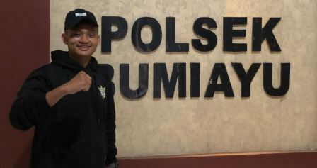

Initial Legal Guidance and Professional Referral Support.

Layanan ini merupakan pendampingan awal bagi individu atau pihak yang membutuhkan arahan terkait permasalahan hukum. Sebagai mahasiswa hukum, saya membantu memberikan gambaran umum mengenai situasi yang dihadapi, menjelaskan opsi langkah awal, serta membantu mengarahkan klien kepada pengacara profesional yang sesuai dengan kebutuhan kasus. Layanan ini tidak menggantikan peran pengacara dan tidak memberikan pendapat hukum resmi. Peran saya adalah membantu dalam tahap awal konsultasi, membantu memahami permasalahan secara garis besar, serta menghubungkan dengan jaringan pengacara daerah yang kompeten dan berpengalaman. Dengan pendekatan yang komunikatif dan terstruktur, layanan ini membantu klien agar lebih siap sebelum memasuki proses hukum yang lebih lanjut.
Mengutamakan etika dan profesionalitas, Membantu persiapan konsultasi resmi, Mudah dipahami.
Pendampingan yang terarah, Transparan, Akses ke pengacara.
Konsultasi awal sebelum ke pengacara, Permasalahan hukum pidana dan perdata (tahap awal), Pertanyaan umum terkait prosedur hukum .